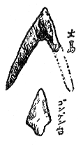
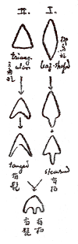

日本に於ける石器時代の遺物に關する、最も古い文獻上の所見が『續日本後記』に出てゐる仁明天皇の承和六年、出羽國田川郡海岸に現はれた石鏃の記事、次いでは『三代實録』や『文徳實録』にある石鏃である樣に、私自身の石器に關する一番昔しの思出もやはり石鏃である。思へば今から已に五十年にも近い前の事であるが、丁度私が七つ八つの頃、山形市の附屬小學校の二三年生であつたが、その時分子供等の間に、鑛物の標本を集めることが流行つて居て、私も其の熱心なコレクターの一人として其の標本箱の中には、水晶、方解石、菊面石、黄鐵鑛などゝ同列に、「矢の根石」といふのがあつた。それは勿論人工の石器といふ意味ではなく、自然物の一として取扱はれて居たのであつて、今思出しても有脚のものか、無脚のものかもハツキリしない。これは山形に近い千歳山の邊から出ると云ふので、友達と一緒に、一度拾ひに行くつもりをして居たが、それは遂に實現する機會もなかつたのは、今日でも殘念な氣がする。
その後私は小學校を屡變へて、山形縣の米澤から、香川縣の丸龜、徳島から大阪へと轉々して、石器時代の遺跡が澤山ある東北地方から離れてしまつたので、前に集めた礦物標本中の矢の根石は、いつしか無くしてしまひ、石鏃の事も忘れてしまつた。處が明治三十年前後のことであるが、其の頃私達唯一の愛讀雜誌『少國民』の讀者通信欄に、神奈川縣の千葉幸喜次とか云ふ人が、自分はその地方で採集した石鏃を澤山持つてゐるから、郵劵を封入して申込めば送つてやるといふ文が載つてゐたので、矢の根石の矢も楯もたまらず、早速申込みをして一日千秋の思で待つて居つた處、大小三箇の石鏃が屆いた。その時の嬉しさ。千葉君の好意を胸に銘して、いつも鼻の油で磨きながら愛玩して居つた。その石鏃はたしか一つは長い柳葉形の鼠色のフリント、他は赤い色、白い色の石英の無脚形で、いまなほ私の匣底に、これのみは大學へも寄贈せずに、少年時代の記念として殘つてゐる筈であるが、今一寸探して見ても分からない。
石器時代の遺跡を自ら踏査して石鏃を拾つたのは、河内の國府であつて、それは今から二十五年程前、京都の三高の生徒時代であつた。山崎直方先輩の書かれた古い『人類學雜誌』をわざわざ東京赤門前の、その頃あつた哲學書院といふ書店から送つて貰つて、それを手引きに國府へ行き、石鏃をはじめ石器をかなり澤山拾つたのは嬉しいことの限りであつた。それは今日京都の大學に收つてゐる。又その頃同窓の廣田道太郎君が貴船神社で、奧の院の御船石の附近から出る舟形石と云ふ御守を出すのを貰つて來た。それを見ると、全く柳葉形の石鏃なので、其後自分で貴船へ行き探しても見當らず、神社でもそんな事は知らぬと云ふのは、今に至るまで狐につまゝれた樣な話である。東京の大學へ行つてからは、明治三十五年の十月、水谷幼花氏と一緒に、品川權現臺の貝塚へ行つて、小さい石英のを一本拾つたのが最初、次は翌三十六年親友の故押田習君と一緒に伊豆の大島へ渡り、その頃は身投げの流行もなかつたので、無事に三原山の見物を濟まして野増村に降り、鳥居先生の論文で知つて居つた龍ノ口の海岸にある、溶岩流下の遺物を見に行くことにした。とある茶店で道を尋ねると、出て來たお婆さんが、今教へてあげるが、盥に水を取つてあげるから、行水をあびて行けとの親切――それ故これは夏休みのことゝ思ふ――さてお婆さんの子供か孫かの人に案内せられて、崖の下の溶岩の下を棒切れで一寸ホジクると、思ひがけなく赤くなつた土器片と共に、黒曜石雁股の大きな石鏃が一つ轉げ出た。その時の嬉しさは今も忘れることは出來ない。これも今大學にある。此の大島のと權現臺のとが、石器時代地名表の第三版の裏に、其頃寫生した圖がのつて居たから此處に掲げる。

石器のいろ／＼とある中にも、石鏃ほど可愛らしくキレいなものはない。私は今でも時々石器採集に出かけ、ゾク／＼と出て來る石鏃を拾ふ夢を見ることがある。これは夢のうちでも一番嬉しい夢である。七八年前佐賀縣のある遺跡へ行つて畠の中を探したら、二三十分間のうちに黒曜石の石鏃三四本を拾つたのも嬉しかつた記憶の一つであるが、それよりも不思議なことは、三四年前數人の學生を引率して大和の飛鳥地方へ古墳見學に出かけた。今木の雙墓を見てから、左手に高い道ばたの畠を指して、斯ういふ處によく石器があるものだと一寸黒い石を拾つたら、其れが實に正眞正銘の石鏃であつたのは嘘の樣な話である。此の日は此の奇蹟に魅せられて、到る處蚤取眼で石鏃を探しあるくと、欽明天皇の御陵前吉備皇女の御墓の前の畠でも一本、なほ雷村へ行く途中の畠でも一本と、石器發見の地名表に三四の新地名を加へることが出來た。攝津高槻の大學農場へ東伏見伯と一緒に行つた時、此の邊から石器が出ますと一寸足許を搖がすと、頗る上等なのが一本轉がつてゐたのも意外であつた。前に述べた各地の外、今一つ違つた處で拾つた石鏃は、亡くなられた坂口先生や榊原君と長崎縣の島原の吉利支丹の遺跡を歩いてゐる時、島原城址の中で黒曜石製を一本。西洋では七八年前北米合衆國ニウ・メキシコ州のペコスの遺跡を、キツダー氏に案内せられた時に一本、それ位であらう。
石鏃が人類の利器として出現したこと、即ち弓箭と云ふ飛道具が、投槍から進歩して發明せられたことは、丁度鐵砲が其の次に發明せられて戰爭の上にも狩獵の上にも、一大轉機を與へた樣に、人類の歴史の上には土器の發明に次ぐ文明史上の大發明であつたに違ひなく、舊石器時代には未だ石鏃はなく、新石器時代になつて始めて是が現はれるのである。而かも金屬器の時代に入つても、始めのうちはなほ使用せられて居つたことは、希臘ミケーネの墓から出てゐるのでも分かる。此の小形の石器はなか／＼製作に技巧を要するので、容易に僞物は出來ない。私自身も子供の頃よく眞似て見たが、直ぐに割れてしまつて到底作られなかつた。ホームス氏などが、米國土人の間に殘つてゐた製作を調べて、これは黒曜石などを火にくべて脆くしたのを、骨器で壓しつけてへぐのであると云ふ。かの有名な僞石器製作家フリント・ヂヤックは一本の鐵の細い棒でかなりな所までやつてゐるが、未だ厚手のものしか出來なかつた。

石鏃の形式分類は、日本でもやつた人があり、西洋にもあるが、オチス・メーソン氏の本に出てゐるのは全く器械的であり、エヴアンス氏や、デシユント氏の方がよい樣に思ふ。要するに、三角形と柳葉形とが基本形で、それから雁股形や有柄状などのものが出て來るのであらう。此の形の相違に由つて、簡單に民族や文化階段などを分つ人もあるが、それは賛成しかねる。寧ろ各工人各工場などの癖に本づくのであらうと思はれる。エーブリー卿は北米其他の野蠻人の實例から、狩獵用には、※［＃「竹かんむり／可」、U+7B34、38-6］と鏃とを一緒に拔き取り易い無髭形、戰爭用には拔取難い有髭形のものを用ゐると云つてゐるのは、多少理窟がある樣に見える。また石鏃は何處の國でも打製が多く、就中朝鮮には非常に精巧なものがある。私も先年慶州の川北面の丘陵上で、清野君や赤星青年などゝ一緒に、之を拾つたことがある。
石鏃の思出でも、いつの間にやら少し理窟に這入つて來さうであるから、これで止めることにしようが、とにかく四五十年も昔集めた矢の根石が、今日の私の石器時代研究に絲をひいてゐるのであるが、あの時の水晶も今なほ強い執着を殘して、近頃でも、朝鮮旅行中、慶州の南山では水晶採集に出かけ、金剛山では遂に大きな兩劍結晶のものを擔いで歸つたりしたことである。然るに數年前の正月清野君の家で、赤星青年と二人ジヤンケンを以て石鏃を分配し、私も二本ばかりを勝ち得たので、自分の家に歸つてから子供等に、ジヤンケンで頒けてやらうと云つても、一向欲しがらぬのには拍子拔けがしたと同時に、私の家に私同樣の考古癖者が居ないのに安心したことである。――私にも何か石器時代論を書けとの命令であるが、それは近頃あちこちへ書いたこともあるので、若い人々に讓つて、私はたゞわけもない此の石鏃の思出話を綴つて、御茶を濁すことにした。
（ドルメン四ノ六、昭和一〇、六）